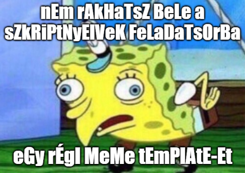

Szkriptnyelvek - 2. gyakorló feladatsor
Python függvények, stringek
Megoldás: A feladatsor egy lehetséges megoldása elérhető ide kattintva.
1. feladat: Abszolútérték-maximum (2 pont)
Írj egy abs_max nevű függvényt, amely két egész számot vár paraméterül, és visszatér ezek abszolútérték-maximumával! Tehát vesszük mindkét szám abszolútértékét, és ezek közül visszaadjuk a nagyobbat.
Példa:
Input: 12, -15 Return: 15
2. feladat: Fibonacci (3 pont)
Írj egy fibo nevű függvényt, amely egy n nemnegatív egész számot kap paraméterül, és visszatér a Fibonacci-sorozat n-edik tagjával! Nagyobb n-értékek esetén iteratív vagy rekurzív megoldást érdemes használni?
Példa:
Input: 10 Return: 55 Input: 42 Return: 267914296
3. feladat: Kuba (2 pont)
Kuba egy Discord szerveren moderátor. A szabadidejét sokszor azzal tölti, hogy a szerver bizonyos tagjainak a felhasználónevét átírja a következőképpen:
- a felhasználónév végére egy
.(pont) karaktert tesz, amennyiben az eredetileg nem végződött pontra - ellenkező esetben, pont karakterre végződő felhasználónevek esetén eltávolítja a név végéről a pontot.
Írj egy kuba nevű függvényt, amely egy felhasználónevet (string) kap paraméterül, elvégzi a fenti szabályok alapján a név átalakítását, majd visszatér az így kapott eredménnyel!
Példa:
Input: 'Korte12' Return: 'Korte12.' Input: 'Tamas.' Return: 'Tamas'
4. feladat: Discord emote-ok (3 pont)
Discordon lehetőségünk van különféle emote-okkal reagálni üzenetekre. Az emote-ok között megtalálhatók például az angol ábécé betűi A-tól Z-ig. Márk ezeknek az emote-oknak a használatával szeretne kirakni egy szót, viszont fontos tudni, hogy a Discord minden emote-ot csak egyszer enged felhasználni!
Írj egy kirakhato nevű függvényt, amely egyetlen szót (string) kap paraméterül, és visszaadja, hogy az kirakható-e úgy, hogy minden betűt csak egyszer használunk fel! A kis- és nagybetűket ne különböztessük meg!
Alma szóban ismétlődő betűként kezeljük az a betűt.
Példa:
Input: 'Szilva' Return: True Input: 'Alma' Return: False Input: 'Gorogdinnye' Return: False
5. feladat: Armstrong-szám (4 pont)
A matematikában egy n-jegyű számot Armstrong-számnak nevezünk, ha minden számjegyét az n-edik hatványra emelve és összeadva az eredeti számot kapjuk. Például a 153 egy Armstrong-szám, hiszen .
Írj egy armstrong_szam nevű függvényt, amely garantáltan egy nemnegatív egész számot kap paraméterül, és visszaadja, hogy a paraméterben kapott szám Armstrong-szám vagy sem!
Példa:
Input: 153 Return: True Input: 1999 Return: False Input: 8208 Return: True
6. feladat: Jelszó-erősség mérő (5 pont)
Elliot egy kiberbiztonsági cégnél dolgozik. Egyik nap a felettese egy jelszó-erősség mérő szkript írásával bízta meg. Készíts egy jelszo_erosseg nevű függvényt, amely egy jelszót (string) kap paraméterül, és visszaadja, hogy a jelszó mennyire erős! Szabályok a jelszó-erősség meghatározására:
- Alapból minden jelszó 1 erős
- Legalább 5 karakter hosszú jelszó: +1 erősség
- Legalább 8 karakter hosszú jelszó: +2 erősség
- A jelszóban szereplő minden alulvonás, kötőjel vagy pont karakter 2-vel növeli a jelszó erősségét
- Ha a jelszó tartalmazza a
jelszovagy az123részszöveget, akkor automatikusan 0 erős - Ha a jelszó 0 karakter hosszú, akkor szintén automatikusan 0 erős.
Példa:
Input: 'hazi_macska_4_life' Return: 10 Input: 'ez1feltorhetetlenjelszo' Return: 0
7. feladat: Magánhangzó eltávolítás (3 pont)
Csabi a szabadidejében sokat posztol Twitteren, viszont a posztok hosszúságára vonatkozó 280-as karakterlimitbe gyakran nem fér bele. Egyik nap kitalálta, hogy ha a posztjaiból elhagyja a magánhangzókat, akkor már kevésbé gyűlik meg a baja a karakterlimittel.
Írj egy maganhangzot_torol nevű függvényt, amely egy szöveget vár paraméterül! A függvény távolítsa el a szövegben található összes magánhangzót, majd térjen vissza a magánhangzók nélküli szöveggel! A paraméterül kapott szövegben ékezetes betűk garantáltan nem szerepelnek.
Példa:
Input: 'Iden Java szigeten voltunk nyaralni. Nem is tudtam, hogy elneveztek egy helyet egy programozasi nyelvrol.' Return: 'dn Jv szgtn vltnk nyrln. Nm s tdtm, hgy lnvztk gy hlyt gy prgrmzs nylvrl.'
8. feladat: Szöveg titkosítása (3 pont)
Robi és Misi jó barátok, sőt történetesen ugyanannál a cégnél munkatársak. Kitalálták, hogy azért, hogy a főnökük ne érthesse meg az egymásnak írt üzeneteiket, egy egyszerű titkosítást használnak. A küldő kódolja az üzenetet az elküldés előtt, a fogadó pedig visszafejti azt.
Írj egy kodol nevű függvényt, amely 3 paramétert kap: rendre a titkosítandó üzenetet, egy n pozitív egész számot, valamint egy c karaktert. A függvény alakítsa át az üzenetet úgy, hogy az üzenet minden betűje után n darab c karaktert tegyen! A függvény visszatérési értéke a kódolt üzenet.
Példa:
Input: 'Pizza delben?', 3, 'x' Return: 'Pxxxixxxzxxxzxxxaxxx xxxdxxxexxxlxxxbxxxexxxnxxx?xxx'
9. feladat: Titkosított szöveg visszafejtése (2 pont)
Természetesen Robi és Misi kommunikációjához fontos, hogy a két kolléga vissza tudja fejteni egymás kódolt üzeneteit.
Írj egy dekodol nevű függvényt, amely 2 paramétert kap: rendre a kódolt szöveget és egy n pozitív egész számot! A szöveget úgy tudjuk dekódolni, hogy a szöveg első karakterétől indulunk, mindig kihagyunk n darab karaktert, és a nem kihagyott karaktereket összeolvassuk. A függvény visszatérési értéke a dekódolt szöveg.
Példa:
Input: 'Pxxxixxxzxxxzxxxaxxx xxxdxxxexxxlxxxbxxxexxxnxxx?xxx', 3 Return: 'Pizza delben?'
10. feladat: Elmozdulás (5 pont)
Írj egy elmozdulas nevű függvényt, amely egy útvonalat elkódoló szöveget kap paraméterül! A szövegben előforduló betűk és jelentésük: F (1 lépést megyünk felfelé), L (1 lépést megyünk lefelé), J (1 lépést megyünk jobbra), B (1 lépést megyünk balra).
A függvény adja vissza a példában látható formátumban azt, hogy a kiinduló pozíciónkhoz képest, az útvonal követésével mennyit megyünk a vízszintes, illetve a függőleges irányba! Ha az útvonal követésével a kiinduló pozícióba érünk vissza, akkor a függvény a Nem mentunk sehova szöveggel térjen vissza!
Például, ha az útvonalunk a JBBFB, akkor 1 lépést mentünk jobbra, majd 2-t balra, 1-et fel és végül 1-et balra. Így az eredeti pozíciónkhoz képest 2 lépéssel kerültünk balra és 1 lépéssel kerültünk feljebb.
Példa:
Input: 'JJFBFFFFFFBBBL' Return: '2 lepes balra, 6 lepes fel' Input: 'FBLLLJLLJ' Return: '1 lepes jobbra, 4 lepes le' Input: 'FFF' Return: '3 lepes fel' Input: 'FFLLBBJJ' Return: 'Nem mentunk sehova'
11. feladat: Palindrom (5 pont)
A palindrom egy olyan szó vagy szókapcsolat, amely visszafelé olvasva is ugyanaz. Például az "indul a görög aludni" egy híres példája a palindromoknak.
Írj egy palindrom nevű függvényt, amely egy szöveget kap paraméterül és visszaadja, hogy a paraméterben kapott szöveg palindrom-e vagy sem! A feladat megoldásának lépései:
- Először alakítsd csupa kisbetűssé a paraméterben kapott szöveget!
- Ezt követően távolítsd el a szövegből az összes szóközt, pontot, felkiáltójelet, kérdőjelet és vesszőt!
- Végül vizsgáld meg, hogy az így kapott szöveg megegyezik-e a megfordítottjával!
Példa:
Input: 'Indul a gorog aludni.' Return: True Input: 'kecske' Return: False
12. feladat: Palindromszám (3 pont)
Az előző feladatban szereplő definíció alapján könnyedén kitalálható, hogy mik a palindromszámok: olyan számok, amelyek számjegyeit visszafelé olvasva az eredeti számot kapjuk.
Írj egy palindromszam nevű függvényt, amely garantáltan egy pozitív egész számot kap paraméterül, és visszaadja, hogy ez a szám palindromszám-e vagy sem!
Példa:
Input: 123454321 Return: True Input: 2020 Return: False
13. feladat: Idegesség detektor (5 pont)
Zsófi az egyik egyetemi projektjében CooSpace kommenteket elemez. A feladat egy egyszerű algoritmus írása, amely a komment szövege alapján eldönti, hogy a kommentet író felhasználó ideges lehetett-e a kommentírás pillanatában.
Írj egy idegesseg_detektor nevű függvényt, amely egy komment szövegét várja paraméterül! A függvény számolja meg, hogy összesen hány nagybetű és felkiáltójel (!) szerepel a komment szövegében, majd az így kapott eredményt ossza el a komment szövegének hosszával! Ha az így kapott arányszám 0.5-nél nagyobb, akkor a függvény logikai igaz, egyébként pedig logikai hamis értékkel térjen vissza!
Kezeld le azt az esetet, amikor a komment szövege egyetlen karaktert sem tartalmaz! Ekkor a függvény None beépített értékkel térjen vissza!
Példa:
Input: 'Hello! 3 darab AUCHANOS ZSEMLET cserelnek SURGOSEN kedd esti PROG2 gyakorlatra.' Return: False Input: 'KEDVES FERENC! Az EN VELEMENYEM pedig az, hogy a FELADAT KESZITOJE KIFOGYOTT az ERTELMES peldamondatokbol!!!!!!' Return: True Input: '' Return: None
14. feladat: Mocking Spongebob (4 pont)
Ki ne emlékezne az alábbi meme template-re és annak jellegzetes szövegformátumára? A feladat egy olyan függvény írása, amely egy megadott szöveget a képen látható formátumra alakít át.

Hozz létre egy mocking_spongebob nevű függvényt, amely egy szöveget kap paraméterül! A függvény alakítsa át a szöveget úgy, hogy a páros indexeken lévő karakterek kisbetűvel, míg a páratlan indexeken lévő karakterek nagybetűvel jelenjenek meg! A visszatérési érték az átalakított szöveg.
Példa:
Input: 'A Szkriptnyelvek meg konnyu targynak szamit.' Return: 'a sZkRiPtNyElVeK MeG KoNnYu tArGyNaK SzAmIt.'
15. feladat: Szövegtömörítés (6 pont)
Írj egy tomorit nevű függvényt, amely egy szöveget vár paraméterül! A függvény tömörítse a paraméterben kapott szöveget úgy, hogy az egymás után lévő ismétlődő karakterek helyett az ismétlődések számát és az ismétlődő karaktert jelenítse meg (így például az aaabb szövegből 3a2b lesz)! A visszatérési érték a tömörített szöveg. A paraméterben kapott szöveg garantáltan legalább 1 karakter hosszú.
Példa:
Input: 'Hahooooo! Van itt valaki???' Return: 'Hah5o! Van i2t valaki3?'